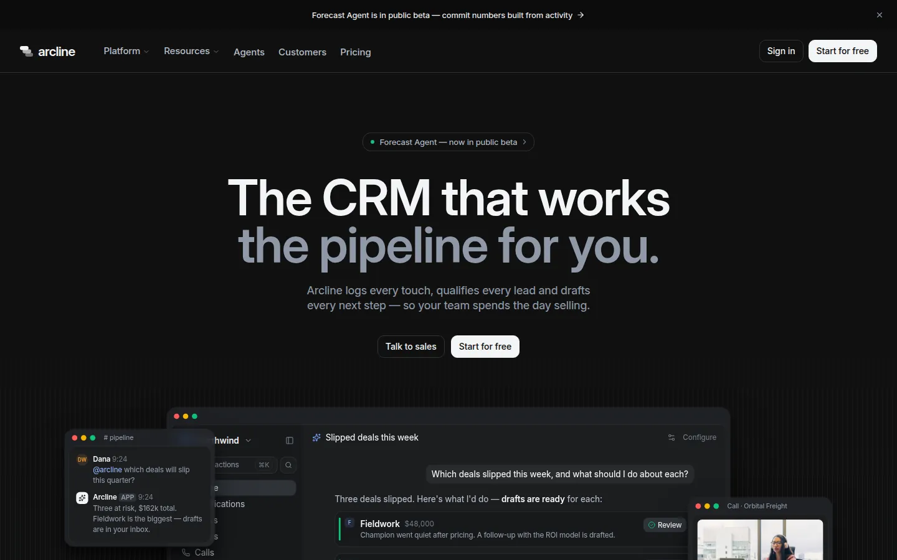
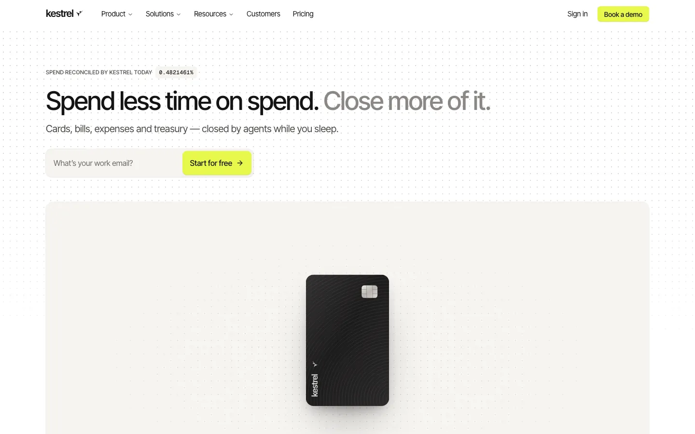
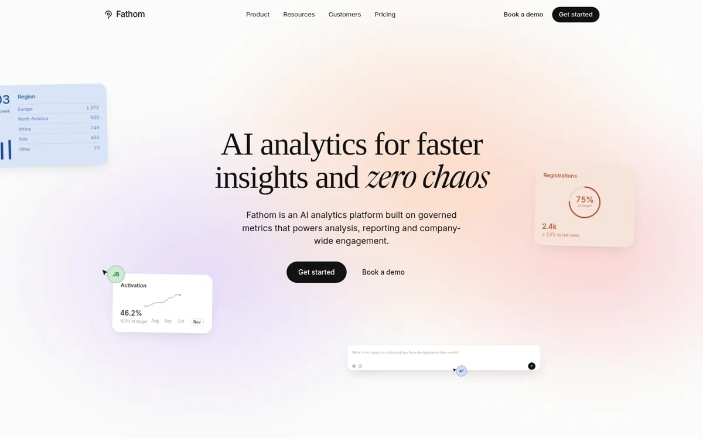

Remix · Marketing · SaaS
Arcline — AI CRM
A minimal, dark five-page site for Arcline, an AI CRM
Clones it into a folder you pick, as a new project. No Codecaine yet? Get it free
Nothing opened? Codecaine has to be installed and opened once for this link to work. Install Codecaine, or download the project and open its folder.

About
A minimal, dark five-page site for Arcline, an AI CRM: a hero app window that answers a question live, a sticky five-chapter platform tour with HTML product mockups (table and email composer, workflow builder, pipeline board, analyst, charts), a Deal Memory band with isometric line icons, pricing with a comparison table, customers, an agents page and a changelog.
Designed for
- AI and SaaS products that want a calm, precise, hairline-grid landing page
- CRM, sales and revenue tools that need to show their product, not describe it
- Seeing HTML product mockups, micro-interactions and agent-UI primitives the editor can drive
Details
- Version
- 2.1.0
- Updated
- Sep 30, 2026
- Pages
- 6
- Framework
- vite
- Styling
- tailwindcss@4
- Dev port
3160- SDK
@canvas/react 0.1.1- License
- MIT
- Download
- 872 KB · 104 files
Keywords
Every page
5 pages, as they open at 1440px.


More remixes

Kestrel — Spend Management
A calm, white-and-warm-grey fintech site for Kestrel, a spend platform run by agents

Fathom Analytics
An AI analytics landing page built from pinned, scroll-scrubbed scenes

Castwell — AI Social Media Manager
A five-page template for a centralized social media manager run by an AI marketing team